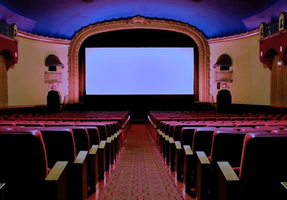
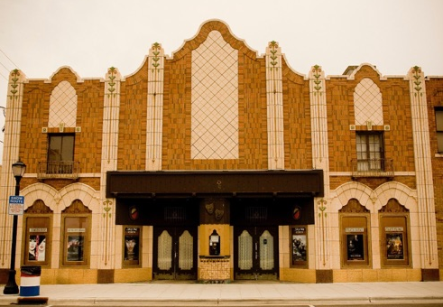
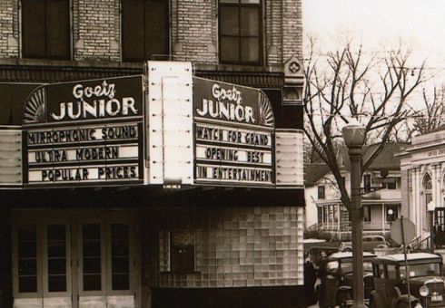

The Film Era

The film era ended at the Goetz Theatres , Sunday.

First digital showing, "New Year's Eve" presented , Tuesday.

All Theatres presented in digital Projection - sight & sound - , Friday. Featured: "Alvin & the Chipmunks: Chipwrecked", "Sherlock Holmes: Game of Shadows" and "New Year's Eve."